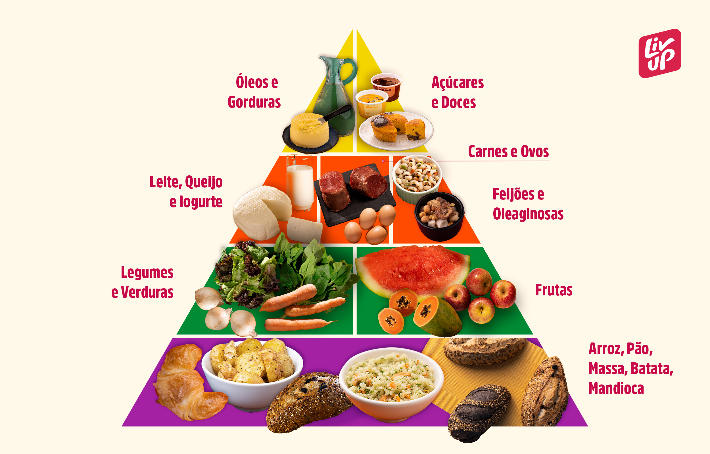

Alimentação
Uma alimentação saudável é composta por uma variedade de alimentos nutritivos, como frutas, legumes, grãos integrais, proteínas magras e gorduras saudáveis. É importante controlar as porções, evitar alimentos processados e manter-se hidratado. Uma dieta equilibrada promove saúde física, bem-estar emocional e mental, prevenindo doenças e aumentando os níveis de energia.

Alimentar-se de forma saudável é essencial para manter uma boa saúde e bem-estar. Uma dieta equilibrada rica em frutas, vegetais, proteínas magras e grãos integrais fornece os nutrientes necessários para o funcionamento ideal do corpo e da mente. Evitar alimentos processados e ricos em açúcares, sal e gorduras saturadas é crucial, pois esses podem contribuir para o desenvolvimento de doenças crônicas, como diabetes tipo 2, hipertensão e doenças cardíacas.
Voltar